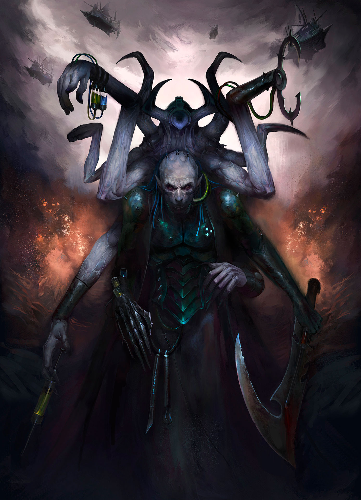
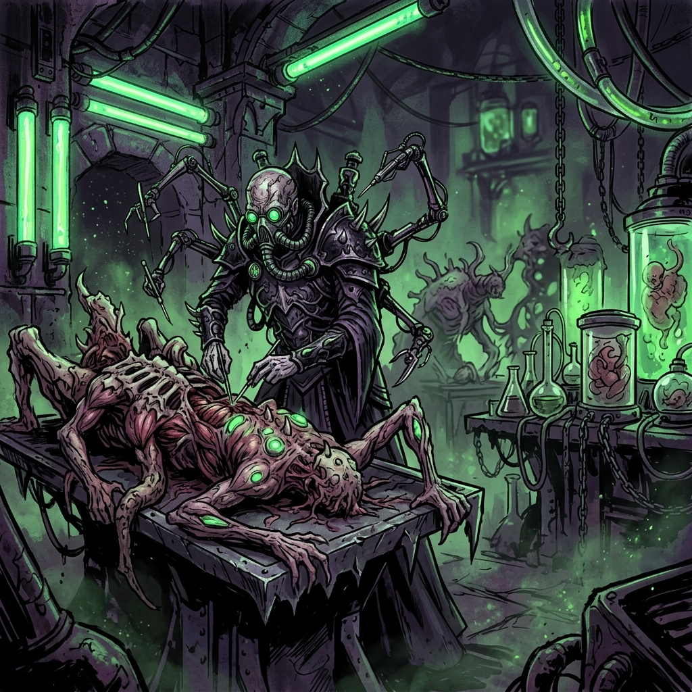
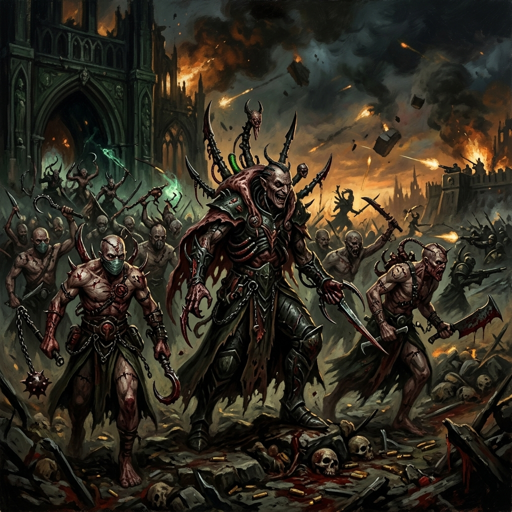

URIEN RAKARTH
Mestre Haemonculus • O Escultor de Carne • Líder do Covenant dos Profetas de Carne

Origem
Nas profundezas das catacumbas esquecidas e frias de Commorragh, os Haemonculi realizam experimentos abomináveis sobre a vida, a dor e a biologia. O líder indiscutível e ancestral dessa cabala cirúrgica é Urien Rakarth, um dos seres mais vis, imortais e fisicamente aterrorizantes da galáxia.
Dizem que Rakarth é antigo a ponto de ter operado laboratórios e câmaras de tortura muito antes da Queda de sua raça. No entanto, sua busca obsessiva por estender a vida o levou a experimentos extremos em seu próprio corpo. Sua carne pálida, cicatrizada e retalhada esconde apêndices múltiplos, tubos venenosos e dezenas de receptáculos neurais macabros.
Rakarth já morreu centenas de vezes. Em cada morte, seus aprendizes o regeneram em sarcófagos de carne nos poços das Trevas. Mas em seu atual estado, ele parou de se importar com o rejuvenescimento estético, e cada nova morte e regeneração o transforma numa abominação cada vez mais exótica e desprovida de humanidade.

Credo de Guerra
"Eles me chamam de monstro. Eu os chamo de tela em branco. Quando os meus bisturis tocam a carne de vocês, a arte verdadeira ganha vida, destilada do seu sofrimento."
Urien não luta por glória, conquistas ou dinheiro; ele luta por cobaias e conhecimento sádico. Como o mestre dos Profetas da Carne, Rakarth envia suas tropas bizarras — os Wracks dolorosos e os massivos e grotescos Grotesques — para dilacerar qualquer coisa em seu caminho.
Ele valoriza espécimes resistentes, adorando particularmente arrastar Space Marines ou grandes Tyranids para o seu laboratório. Rakarth aprecia transformar os heróis e campeões de raças alienígenas em aberrações retorcidas escravizadas pelas drogas paralisantes de suas veias, mostrando-lhes os limites supremos do sofrimento corporal.
Ele age no campo de batalha como um maestro sombrio, orquestrando um balé repulsivo de fluidos cáusticos, tortura psicológica e monstros mutilados atacando em uníssono sob o seu controle.
Capacidade Bélica
- Regeneração Haemonculus: A biologia corrompida e altamente avançada de Rakarth permite que ferimentos mortais cicatrizem instantaneamente. Fogo de plasma e explosões que derreteriam Astartes muitas vezes causam danos apenas temporários.
- Manopla Injetora: Um de seus braços adicionais cirurgicamente modificados possui seringas carregadas com icor venenoso purificado e toxinas experimentais, paralisando até os maiores demônios de Nurgle com dores alucinógenas.
- O Cajado do Mestre: Armado com uma foice terrível que disseca os alvos de dentro para fora no impacto.
- Mestre das Aberrações: Sua maior arma são seus servos biológicos. Onde Urien vai, monstros gigantescos (Grotesques, Talos Pain Engines) formam uma muralha implacável de proteção viva que nunca sente medo.
Localização Atual: Encarcerado nas entranhas de Commorragh e realizando incursões para curar as almas corrompidas e testar mutações contra os Demônios da Cicatrix Maledictum.
Status: Ativo - Sempre caçando a perfeição sádica no desmembramento do universo.
